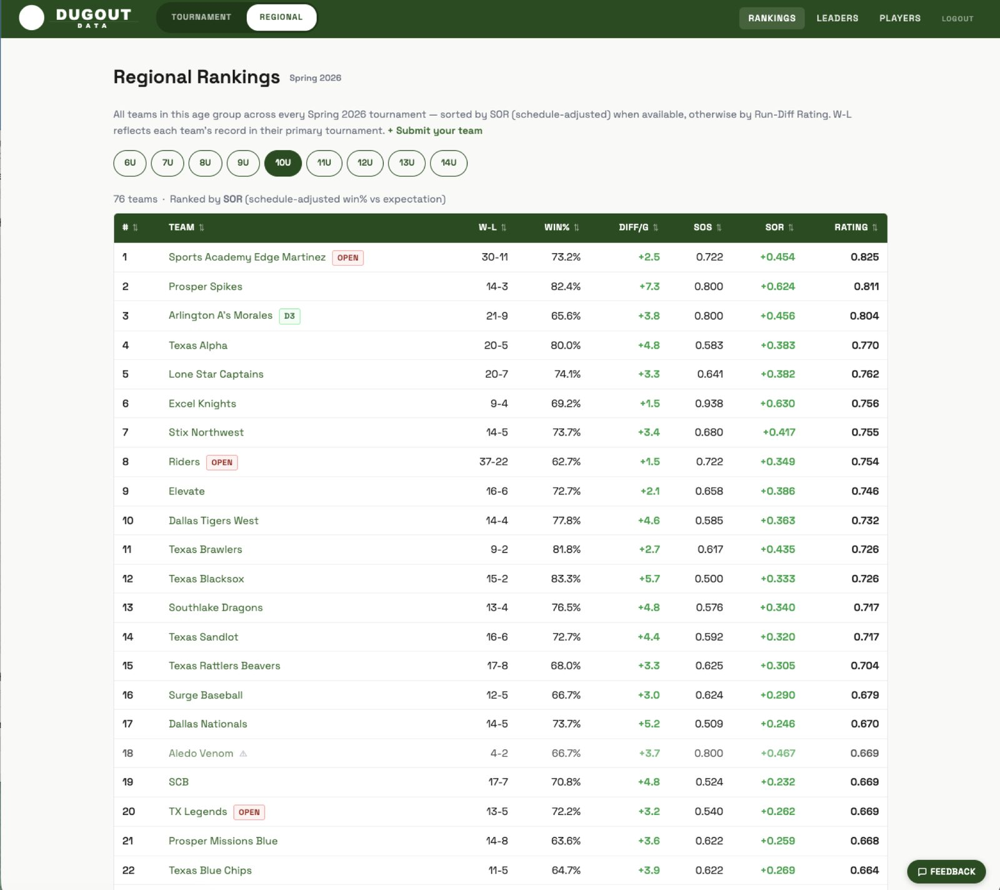

Web design & business automation, built for Fort Worth.
Twelve minutes west of downtown, in Aledo. We build custom websites, CRMs, and AI-powered tools for Fort Worth small businesses — Cultural District boutiques, West 7th restaurants, Near Southside service businesses, Stockyards retailers, TCU-area startups, and the trades and contractors that run the city. No agency overhead, no offshore handoffs, no "account manager" between you and the people writing the code.
Why Fort Worth small businesses hire us
Fort Worth has dozens of agencies — most of them charge agency prices and run a four-person account team between you and the developer. We're a father-son shop. The person who answers the phone is the person writing your code. That changes timelines, budgets, and what's possible.
12 minutes from downtown
Aledo, 76008 — straight shot down I-30 or Camp Bowie. We meet at your office, in the Cultural District, on West 7th, near Sundance Square, or wherever's easiest for you.
No agency overhead
Two people, one quote, fixed price. You're not paying for a corner office in Sundance Square or a six-person account team — just the people building your site.
Live in a week
Most marketing sites we build go live in 5–7 business days. Custom CRMs and internal tools usually 2–3 weeks. We don't run discovery for a month.
Real people answer
Call (682) 999-9240 and you get Colin or Carson. The people building your project are the ones who pick up the phone.
What we build for Fort Worth businesses
Custom websites
Fast, mobile-first marketing sites for Fort Worth restaurants, retail, contractors, professional services, and trades. SEO-baked-in, neighborhood-aware (because "Fort Worth web designer" is a wall of national chains — we beat them on local intent).
More on websites →Business automation & CRMs
Replace your spreadsheet-and-Gmail stack with a single dashboard. Lead inbox, follow-up automation, invoicing, reporting — purpose-built for the way your Fort Worth business actually runs.
More on automation →AI-powered internal tools
PDF parsing, document review, bid generation, customer support assistants. We use the Claude API to build tools that read, summarize, and decide — so your team stops doing repetitive work that doesn't need a human.
See AI examples →Recent Fort Worth-area projects
Real DFW businesses, real shipped projects, real Texas zip codes.
 LNDMRK Drone
LNDMRK DroneZero web presence → automated lead engine
36-page Next.js site with 16 DFW market pages and dual-layer Meta CAPI tracking. Built for a Fort Worth-area drone services company.
 Bearcat Turf
Bearcat TurfLocal landscaper competing with national brands
136-page custom Astro site with 44 hyper-local SEO pages covering Fort Worth-area zip codes. Server-side Meta CAPI recovers 30–40% of lost ad signal.

DugoutDataYouth baseball analytics for all of DFW
Full-stack platform ingesting ~5,900 box scores across 294 teams, refreshed nightly without a human touching a keyboard.
Service area
We work across the entire Fort Worth metro, with deep coverage on the west side:
- Fort Worth — full metro
- West 7th, Cultural District, Near Southside
- Stockyards, Sundance Square, Downtown
- TCU area, Westover Hills
- Aledo (76008) — 12 min west
- Benbrook (76126)
- Willow Park (76087)
- Weatherford (76086, 76087, 76088)
- Tarrant County — full west side
Frequently asked
How are you different from a Fort Worth agency?
Most Fort Worth web agencies have an account team, a project manager, a designer, and an offshore developer. You pay for all of them. We're two people — and we're both technical. Your project goes faster and costs less because the chain of command is two-deep, not eight.
How long does a website take?
Marketing sites: 5–7 business days from kickoff to live. Custom CRMs and internal tools: 2–3 weeks typically.
Do you do SEO and ongoing maintenance?
Yes. Every site we ship is built with SEO baked in — clean HTML, schema markup, fast load times, sitemap, robots.txt, structured data. We also offer monthly retainers for content updates and ongoing optimization.
Are you really local?
Yes. Colin and Carson Burns, physically based in Aledo (76008), 12 minutes west of downtown Fort Worth.
Ready to get started?
Tell us about your business and what you need. We respond within one business day — usually faster.
Start a Project or call (682) 999-9240